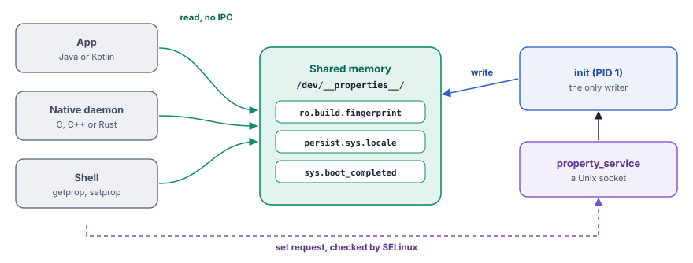
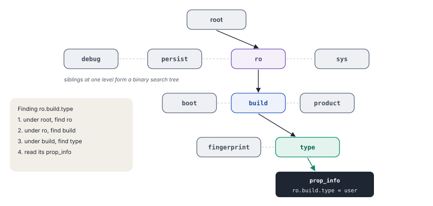
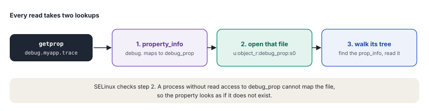
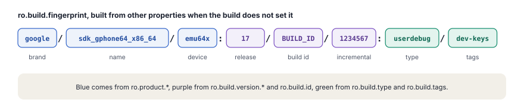

System properties are a small key-value store that every process can read quickly, while one trusted process controls every change.
An Android device needs many small facts that many processes must know. Which build runs on this device? Which language did the user pick? Has the boot finished? Is this a debug build? Android keeps such facts as system properties, short pairs of a name and a value, such as ro.build.version.sdk=37 or sys.boot_completed=1.
In chapter 4, you saw the property system briefly, as one of the jobs of init. This chapter opens it up. It starts with the reasons for its design and with the shared memory where the values live. It continues with the prefixes of the names, the SELinux rules for reading and writing and the work of the property service at boot. It ends with the APIs in Java, C and Rust, typed properties with sysprop_library and the changes in Android 17.
What a system property is
A system property is a name and a value, both plain text. The name is split into parts by dots, such as persist.sys.locale. The first part, the prefix, decides how the property behaves. The value is short, at most 91 bytes for a property that can change.
Properties appear in every layer of Android. The bootloader passes some of them to the kernel. init loads hundreds of them from files at boot. Native daemons read them to decide how to start. The Java framework reads them to learn about the build and the device. Developers set some of them with adb to turn on debug features.
$ adb shell getprop ro.product.model
sdk_gphone64_x86_64
$ adb shell getprop sys.boot_completed
1
$ adb shell getprop # every property the shell can read, as [name]: [value]The store is small on purpose. It does not hold user data or large settings. Those belong in files, databases or the settings provider of the framework. Properties hold the few facts that must be available everywhere, fast and early in the boot.
Many readers, one writer
The whole design follows from one pattern. Almost every process reads properties, often and in hot code paths. Very few processes write them, and a wrong write can harm the whole device. Android therefore makes reads as cheap as possible and puts every write through one guarded door.

- Reads without a lock or IPC. Each process maps the property files into its own memory. A read is a lookup in that memory, with no call to another process. This keeps reads fast, so that code can check a property even in a busy loop.
- One writer. Only
init, the process with ID 1, writes to the shared memory. Every other process sends a request through a socket. This keeps the data consistent, because two writers can never collide. - SELinux on both paths. The policy decides which process can set which property and which process can read which group of properties. A broken or hostile app then cannot change the device configuration.
- Values that never change. A property that starts with
ro.can be set once and then stays fixed until the next boot. Code can trust such values, such as the build type. - Values that survive a reboot. A property that starts with
persist.is also saved to storage, so that settings such as the system language come back after a restart.
Think of the notice board of a housing society. Every resident can walk past and read it at any time, without asking anyone. Only the society office pins up or changes notices. A resident who wants a change hands a request to the office, and the secretary checks whether that resident can make it. Some notices, such as the registration number of the society, are painted on and never change. System properties work the same way, with init as the office.
Where properties live
The values live in a set of files under /dev/__properties__/. This folder sits on a tmpfs file system, so it exists only in RAM and disappears at shutdown. init creates it early in the second stage of boot, before it loads any value.
void PropertyInit() {
...
mkdir("/dev/__properties__", S_IRWXU | S_IXGRP | S_IXOTH);
CreateSerializedPropertyInfo();
if (__system_property_area_init()) {
LOG(FATAL) << "Failed to initialize property area";
}
if (!property_info_area.LoadDefaultPath()) {
LOG(FATAL) << "Failed to load serialized property info file";
}
...
}The folder holds one file for each SELinux context of properties, so that SELinux can control reads per group. It also holds two special files. property_info says which context each property name belongs to. properties_serial holds one counter that grows with every change of any property.
![The folder /dev/__properties__ lives in RAM. It holds property_info, which says which SELinux context each property name has, properties_serial, one counter for all changes, and one file for each context, for example build_prop for ro.build values, debug_prop for debug values and system_prop for sys and persist.sys values. Init maps every file for reading and writing. Other processes map them read only and shared. SELinux checks each file, and a process without read access sees the property as missing.](../../assets/img/diagrams/sp-files.svg)
Each property file has a fixed size, normally 128 KB. Bionic, the C library of Android, creates and maps the files. init maps them for reading and writing. Every other process maps them read-only. The flag MAP_SHARED lets all processes see the same physical pages, so a change by init is visible to every reader at once, without any copy.
constexpr size_t PA_SIZE = 128 * 1024; // 1 MB with LARGE_SYSTEM_PROPERTY_NODE
constexpr uint32_t PROP_AREA_MAGIC = 0x504f5250; // "PROP"
prop_area* prop_area::map_fd_ro(const int fd) {
struct stat fd_stat;
if (fstat(fd, &fd_stat) < 0) return nullptr;
if ((fd_stat.st_uid != 0) || (fd_stat.st_gid != 0) ||
((fd_stat.st_mode & (S_IWGRP | S_IWOTH)) != 0) ||
(fd_stat.st_size < static_cast<off_t>(sizeof(prop_area)))) {
return nullptr; // refuse files that root does not own
}
void* const map_result = mmap(nullptr, pa_size_, PROT_READ, MAP_SHARED, fd, 0);
...
}Before a reader maps a file, it checks that root owns the file and that nobody else can write to it. A file that fails this check is not a real property file, so the reader refuses it. This protects processes from a fake property file that an attacker places in their way.
A tree of name parts
Each file starts with a small header and then holds a tree. Bionic splits each property name at its dots, and every part becomes a node. The node ro has children such as build and product, and build has children such as fingerprint and type. Names that share a start, such as all ro.build. names, share the upper nodes, so the tree stays small.

A tree of this kind is called a trie. The children of one node are kept as a binary search tree, sorted by name, so that the search at each level is quick. A lookup of ro.build.type therefore needs only a few comparisons, however many properties exist. Each node holds its links as offsets inside the file, not as pointers, so that the same file works at any address in any process.
struct prop_trie_node {
uint32_t namelen;
atomic_uint_least32_t prop; // offset of the prop_info, if a property ends here
atomic_uint_least32_t left; // smaller sibling
atomic_uint_least32_t right; // larger sibling
atomic_uint_least32_t children; // first node of the next level
char name[0]; // this part of the name
};The links are atomic values. init can add a new node while other processes read the tree, and a reader never follows a link that is only half written.
One property in memory
At the end of each full name, the node points to a prop_info. This 96-byte structure holds the value and a 32-bit field called serial.
struct prop_info {
atomic_uint_least32_t serial;
union {
char value[PROP_VALUE_MAX]; // 92 bytes, the value and its end mark
struct {
char error_message[56];
uint32_t offset; // where a long value lives
} long_property;
};
char name[0]; // the full name follows
};The field serial packs several facts into one number, so that a reader can learn all of them with one atomic read.
- Bit 0, the dirty bit. It is set while
initwrites a new value. - Bit 16, the long flag. It is set when the value is longer than the normal limit.
- Bits 24 to 31. They hold the length of the current value.
- The other bits. They form a counter that grows with each change.
Reading while init writes
A reader never waits for a lock, yet it never sees half of an old value mixed with half of a new one. Two small tricks make this work, a backup copy of the old value and the dirty bit.
![A sequence diagram with the lanes init, the writer, prop_info in memory, a reader. Step 1, init, the writer to prop_info in memory, copy the old value to the backup area, readers can still use it. Step 2, init, the writer to prop_info in memory, set the dirty bit in serial, a write is in progress. Step 3, a reader to prop_info in memory, read serial, dirty bit is set. Step 4, prop_info in memory to a reader, old value from the backup area, never a half-written value. Step 5, init, the writer to prop_info in memory, copy the new value. Step 6, init, the writer to prop_info in memory, new serial, dirty bit clear, length and counter updated. Step 7, a reader to prop_info in memory, read serial again, it changed, so read once more. Step 8, prop_info in memory to a reader, new value, serial unchanged, the read is done. Step 9, init, the writer to a reader, futex wake, wake processes that wait for a change.](../../assets/img/diagrams/sp-dirty.svg)
init first copies the old value into a backup area at the start of the file. Then it sets the dirty bit, writes the new value and finally stores a new serial with the dirty bit clear.
A reader loads the serial first. If the dirty bit is set, it copies the value from the backup area. Then it loads the serial again. If the serial did not change, the copy is consistent. If it changed, the reader simply reads once more.
uint32_t SystemProperties::ReadMutablePropertyValue(const prop_info* pi, char* value) {
uint32_t new_serial = load_const_atomic(&pi->serial, memory_order_acquire);
uint32_t serial;
for (;;) {
serial = new_serial;
unsigned int len = SERIAL_VALUE_LEN(serial);
if (SERIAL_DIRTY(serial)) {
// a write is running, so use the backup copy of the old value
prop_area* pa = contexts_->GetPropAreaForName(pi->name);
memcpy(value, pa->dirty_backup_area(), len + 1);
} else {
memcpy(value, pi->value, len + 1);
}
atomic_thread_fence(memory_order_acquire);
new_serial = load_const_atomic(&pi->serial, memory_order_relaxed);
if (serial == new_serial) break; // nothing changed during the read
}
return serial;
}After the write, init wakes every process that waits for a change of this property, with a futex, a fast kernel wait queue. It also increases the global counter in properties_serial. A process can therefore wait for one property or watch for any change at all, without polling.
Properties that start with ro. skip all of this. They never change after the first set, so a reader can copy the value directly, without any check.
A value that can change is limited to 91 bytes, plus the end mark. Some ro. properties need more, such as a long build fingerprint. For these, bionic stores the value in a separate place in the file and sets the long flag in the serial. The prop_info then holds only the offset of the value. This works only for ro. properties, because their values never change.
Every read takes two lookups
A reader does not search every file for a name. It first asks property_info, which holds a second, separate tree. That tree maps names and prefixes to SELinux contexts and to value types. With the context, the reader knows which file holds the property. Then it searches the tree in that one file.

init builds property_info at boot from the property_contexts files of all partitions, which the next sections cover. The split into one file per context is the key to read control. The kernel checks whether a process can open and map each file, so the policy decides who can read which group of properties.
The prefix decides the behavior
A property has no separate type field for its behavior. The first part of its name carries that meaning. Each prefix is a contract that init and the rest of the system follow. Everyone then knows at a glance whether a value can change, whether it survives a reboot and who owns it.
![Eight prefixes and what they mean. ro is set once at boot and never changed, for example ro.build.fingerprint. persist is saved in /data and survives a reboot, for example persist.sys.locale. next_boot is staged now and applied at the next boot. sys is runtime state that is lost at reboot, for example sys.boot_completed. vendor is owned by the vendor partition. debug is for developers, and the shell can set it, for example debug.hwui.overdraw. ctl is a command to init that is never stored, for example ctl.restart equals adbd. init.svc is written by init and holds the state of a service, for example init.svc.adbd equals running.](../../assets/img/diagrams/sp-namespaces.svg)
ro., set once
A property that starts with ro. is not really read-only. It is write-once. init can create it, but after that, any attempt to set it again fails.
prop_info* pi = (prop_info*)__system_property_find(name.c_str());
if (pi != nullptr) {
// ro.* properties are actually "write-once".
if (StartsWith(name, "ro.")) {
*error = "Read-only property was already set";
return {PROP_ERROR_READ_ONLY_PROPERTY};
}
__system_property_update(pi, value.c_str(), valuelen);
} else {
int rc = __system_property_add(name.c_str(), name.size(), value.c_str(), valuelen);
...
}Most ro. values come from the build or the bootloader, such as ro.build.type, ro.product.model or ro.boot.verifiedbootstate. Because they cannot change, the rest of the system can base decisions on them. A security check that reads ro.debuggable knows that no app changed the value after boot.
persist., saved across reboots
A property that starts with persist. lives in memory like any other, but init also writes it to /data/property/persistent_properties. That file uses Protocol Buffers, a compact binary format. At every boot, after /data is mounted, init loads the saved values back.
The write is careful, because a half-written file after a power cut can lose every saved setting. init writes the whole set into a temporary file, forces it to storage with fsync() and then renames it over the old file. A rename is atomic, so the file on storage is always either the complete old version or the complete new one.
const std::string temp_filename = persistent_property_filename + ".tmp";
unique_fd fd(open(temp_filename.c_str(), O_WRONLY | O_CREAT | O_NOFOLLOW | O_TRUNC | O_CLOEXEC, 0600));
...
WriteStringToFd(serialized_string, fd);
fsync(fd.get());
rename(temp_filename.c_str(), persistent_property_filename.c_str()); // atomicA device can set ro.property_service.async_persist_writes to true. A separate thread then does this disk work, so that one caller does not hold up the property service for others.
next_boot., staged for later
A property that starts with next_boot. stages a change for the next boot. init saves it in the same file as the persist. values. At the next boot, it applies the staged value to the real name and removes the staged entry. For example, next_boot.persist.sys.locale=fr-FR sets persist.sys.locale to fr-FR after the restart. This lets the system prepare a change that must not take effect while the device runs.
sys., state of the running system
Properties under sys. describe the current state and are lost at a reboot. sys.boot_completed becomes 1 when the boot finishes, and many services wait for it. sys.powerctl is special. Setting it starts a reboot or a shutdown, and init logs which process asked for it. You can then trace an unexpected restart to its cause.
vendor. and debug.
The prefix vendor. marks properties of the vendor partition, and persist.vendor. marks saved ones. Since Project Treble, which chapter 10 described, the system and the vendor side keep their properties apart, as a later section shows.
The prefix debug. is for developers. The policy lets the shell set these values, so you can turn on a debug feature with adb shell setprop. An example is debug.hwui.overdraw=show, which colors the screen by how often each pixel is drawn.
ctl. and init.svc., talking to init
A name that starts with ctl. is never stored. It is a command for init. Setting ctl.start, ctl.stop or ctl.restart to the name of a service starts, stops or restarts that service. init checks the permission against the SELinux context of the target service, not of the property. A process can then control only the services that the policy allows.
init reports the result in init.svc. properties. For each service, init.svc.<name> holds one of four states, namely stopped, running, stopping or restarting.
$ adb shell getprop init.svc.adbd
running
$ adb shell getprop | grep "init.svc" | headWho can read and who can write
Properties control important behavior, such as debug features, the USB mode or a reboot. SELinux therefore guards both paths. On the write path, init asks SELinux before every change. On the read path, the kernel checks access to each property file. Both checks use the same labels, which come from property_contexts files.
property_contexts
A property_contexts file maps names or prefixes to SELinux labels. A line can also say that only an exact name matches and which type the value must have.
# name or prefix label match type
net. u:object_r:system_prop:s0
debug. u:object_r:debug_prop:s0
debug.db. u:object_r:debuggerd_prop:s0
sys.powerctl u:object_r:powerctl_prop:s0
persist.bluetooth. u:object_r:bluetooth_prop:s0
ro.build.type u:object_r:build_prop:s0 exact string
persist.profcollectd.enabled u:object_r:profcollectd_enabled_prop:s0 exact boolThe longest match wins. debug.db.uid gets the label debuggerd_prop, not debug_prop, because debug.db. is more specific than debug.. Each partition brings its own file, such as plat_property_contexts for the system side and vendor_property_contexts for the vendor side. init merges all of them into the property_info tree at boot, so that each partition can label its own properties without changing the platform policy.
The write check
A process sets a property through a Unix socket, as the next section shows in detail. The socket tells init who the caller is, and init runs three checks before it changes anything.
![A sequence diagram with the lanes caller, socket, init, SELinux, shared memory. Step 1, caller to socket, __system_property_set(name, value), connect and send name and value. Step 2, socket to init, accept4(), SO_PEERCRED, pid, uid and gid of the caller. Step 3, init to init, getpeercon(), the SELinux context of the caller. Step 4, init to init, property_info lookup, the context and type of the property. Step 5, init to SELinux, selinux_check_access(..., "set"), can this caller set this property. Step 6, SELinux to init, allowed, or denied, with an audit log. Step 7, init to init, CheckType(type, value), for example bool or int. Step 8, init to shared memory, update or add the value, ro. only if it does not exist yet. Step 9, init to caller, PROP_SUCCESS, or an error code.](../../assets/img/diagrams/sp-setflow.svg)
if (!IsLegalPropertyName(name)) {
*error = "Illegal property name";
return PROP_ERROR_INVALID_NAME;
}
if (StartsWith(name, "ctl.")) {
... // checked against the target service
}
const char* target_context = nullptr;
const char* type = nullptr;
property_info_area->GetPropertyInfo(name.c_str(), &target_context, &type);
if (!CheckMacPerms(name, target_context, source_context.c_str(), cr)) {
*error = StringPrintf("SELinux permission check failed "
"(source_context=%s, target_context=%s)",
source_context.c_str(), target_context ?: "(null)");
return PROP_ERROR_PERMISSION_DENIED;
}
if (!CheckType(type, value)) {
*error = "Property type check failed, value doesn't match expected type";
return PROP_ERROR_INVALID_VALUE;
}- A legal name. Names with forbidden characters are refused at once.
- The SELinux check.
inittakes the context of the caller from the socket and the label of the property fromproperty_info. It asks SELinux whether this caller cansetthis label in the classproperty_service. A refusal also writes an audit record, which helps a developer to write the missing rule. - The type check. If the property has a type, the value must fit it. A
boolacceptstrue,false,1or0, and anintaccepts only a whole number.
A rule in the policy names the caller and the label. The macro set_prop below lets the shell set every property with the label debug_prop.
set_prop(shell, debug_prop)The read check
A read never reaches init, so init cannot check it. The check happens in the kernel instead, when a process opens and maps the file of a context. Each file carries the SELinux label of its context. A process whose domain lacks the file { read open map } rights for that label cannot map the file. For that process, every property in the file simply does not exist.
This is how Android hides most properties from apps. The policy lets apps read a small set of labels, such as the build properties that the public android.os.Build class shows anyway. Labels that could reveal sensitive details or help to fingerprint a device stay closed to them.
$ adb shell getprop -Z ro.build.type
u:object_r:build_prop:s0
$ adb shell getprop -Z debug.myapp.trace
u:object_r:debug_prop:s0For the curious, the app compatibility override Optional
Android can show a different value of a property to one process only. A process that turns on compatibility overrides first looks for a shadow property with the prefix ro.appcompat_override.. If ro.appcompat_override.ro.some.flag exists, that process reads its value in place of ro.some.flag. Every other process still sees the original value.
#define APPCOMPAT_PREFIX "ro.appcompat_override."
if (use_appcompat_override_) {
snprintf(overrideName, totalLength, "%s%s", APPCOMPAT_PREFIX, name);
prop_area* pa = contexts_->GetPropAreaForName(overrideName);
if (pa) {
const prop_info* pi = pa->find(overrideName);
if (pi) return pi;
}
}
// otherwise the normal lookup of nameThe platform uses this to give an older app the value that it expects, without changing the device for everyone else. On the init side, the feature needs a build flag. Its files live under /dev/__properties__/appcompat_override/.
The property service in init
In chapter 4, you saw init call PropertyInit() and StartPropertyService() in its second stage. This section looks at what happens between these two calls and after them. By the time the first app starts, several hundred properties already exist, from several sources and in a fixed order.
![Five stages in order. First, androidboot values from the kernel command line, bootconfig and device tree become ro.boot properties. Second, init loads the build.prop files of system, system_ext, vendor, odm and product, and a later file wins for the same name. Third, init derives values such as ro.product, ro.build.fingerprint, ro.product.cpu.abilist and ro.vendor.api_level. Fourth, the property service opens its two sockets, so other processes can ask to set values. Fifth, after /data mounts, persist properties load, next_boot values apply and ro.persistent_properties.ready becomes true. All of this happens in second-stage init, before most other processes start.](../../assets/img/diagrams/sp-boot.svg)
Values from the bootloader
The bootloader passes facts about the hardware and the boot to the kernel. It uses the kernel command line, the newer bootconfig and the device tree. Every value whose key starts with androidboot. becomes an ro.boot. property.
constexpr auto ANDROIDBOOT_PREFIX = "androidboot."sv;
static void ProcessBootconfig() {
android::fs_mgr::ImportBootconfig([&](const std::string& key, const std::string& value) {
if (StartsWith(key, ANDROIDBOOT_PREFIX)) {
InitPropertySet("ro.boot." + key.substr(ANDROIDBOOT_PREFIX.size()), value);
}
});
}So androidboot.verifiedbootstate=green becomes ro.boot.verifiedbootstate=green, the result of Android Verified Boot from chapter 4. init then copies a few of these values to older names that much code still reads. For example, ro.boot.hardware becomes ro.hardware, the name that the legacy HAL loader of chapter 10 used to find its libraries.
build.prop files and their order
Next, init reads the build.prop files of all partitions. The build system writes these files, one for each partition, so that each part of the image describes itself. The order matters, because a later file wins when two files set the same name.
/system/build.prop/system_ext/etc/build.prop/system_dlkm/etc/build.prop/vendor/default.propand/vendor/build.prop/vendor_dlkm/etc/build.propand/odm_dlkm/etc/build.prop/odm/etc/build.prop/product/etc/build.prop
The order runs from the most general part of the image to the most specific one. A device maker can then change a value in the product partition without touching the system image. init collects all files in a map first and writes the final values afterwards, so that each property is set only once. This also means that an ro. value from a later file can still replace one from an earlier file.
Values from vendor and ODM files get the SELinux context of the vendor side while init loads them. The policy then decides which properties the vendor side can set, even inside its own build.prop.
Values that init works out
Some properties come from no file at all. init builds them from other properties, so that every device ends up with a complete and consistent set.
- The product identity. Each partition can set its own name, such as
ro.product.vendor.modelorro.product.product.model. Ifro.product.modelis still empty,inittakes the first value in the order product, odm, vendor, system_ext and system. - The build fingerprint. If the build did not set
ro.build.fingerprint,initjoins it from the brand, name, device, release, build ID, incremental number, type and tags. - The CPU ABIs.
ro.product.cpu.abilistlists the instruction sets that the device runs, 64-bit ones first, so that the package manager knows which native libraries an app can use. - The vendor API level.
ro.vendor.api_leveltells the system which API level the vendor image supports. Later releases use it to decide which rules the vendor side must follow.

The fingerprint identifies one exact build. App stores, update servers and crash reports use it to tell builds apart, so a device must never show the fingerprint of another build.
Two sockets for writes
StartPropertyService() opens two Unix sockets, each served by its own thread.
/dev/socket/property_serviceis open to every process (mode 0666). The SELinux check, not the socket, decides what a caller can set./dev/socket/property_service_for_systemis open only to the groupsystem(mode 0660). Its thread also handles internal messages from the main loop ofinit, such as the request to load the saved properties.
A client sends a short message. The current format, PROP_MSG_SETPROP2, sends the length and text of the name, then the length and text of the value. init answers with a result code, so the caller knows whether the change worked. init also reads the user, group and process ID of the caller from the socket with SO_PEERCRED, which the caller cannot fake.
Changes that start actions
After each successful change, init checks its .rc files for triggers on that property. This turns properties into a simple signal between processes.
on property:sys.boot_completed=1
start post_boot_service
on property:persist.sys.usb.config=* && property:ro.persistent_properties.ready=true
setprop sys.usb.config ${persist.sys.usb.config}One process sets a property, and init starts a service or runs commands in response. Much of the boot sequence of Android depends on such triggers.
Saved values arrive late
The persist. values sit in /data, and /data is encrypted and mounted only later in the boot. Until then, these properties simply do not exist. When /data is ready, the main loop of init sends a message to the property thread. The thread loads the saved file, applies the next_boot. entries and finally sets ro.persistent_properties.ready to true.
Code that needs a saved value early must handle the case where it is still missing, or wait for ro.persistent_properties.ready. A common bug reads a persist. setting too early, gets an empty value and silently uses the default.
Reading and writing from code
Every language on the platform reaches the same shared memory and the same socket. Only the wrapper differs.
Java, the SystemProperties class
The framework uses android.os.SystemProperties. The class is hidden from the public SDK and marked @SystemApi, so platform code and privileged apps can use it, but ordinary apps cannot. The getters return a default when a property is missing, so that callers do not need to check for null.
public static String get(String key, String def)
public static int getInt(String key, int def)
public static long getLong(String key, long def)
public static boolean getBoolean(String key, boolean def) // y, yes, 1, true, on and n, no, 0, false, off
@FastNative
private static native String native_get(String key, String def);
// _NOT_ FastNative: native_set performs IPC and can block
private static native void native_set(String key, String def);The getters are marked @FastNative, a faster form of a JNI call, because a read is only a lookup in memory. The setter is not, because a set sends a message to init and waits for the answer. The setter also refuses a value longer than 91 bytes for any name that does not start with ro..
For a property that a component reads very often, SystemProperties.find() returns a Handle. The handle keeps the address of the prop_info, so each later read skips the search through the tree.
Ordinary apps once read properties through reflection on this hidden class. Since Android 9, the platform restricts hidden APIs. The methods carry @UnsupportedAppUsage, and apps that target newer API levels can no longer call them. For apps, properties were never a public API.
C and C++
Native code uses the functions of bionic in <sys/system_properties.h>, which the NDK also provides.
const prop_info* __system_property_find(const char* name);
void __system_property_read_callback(const prop_info* pi,
void (*callback)(void* cookie, const char* name, const char* value, uint32_t serial),
void* cookie);
int __system_property_set(const char* name, const char* value);
bool __system_property_wait(const prop_info* pi, uint32_t old_serial,
uint32_t* new_serial_ptr, const timespec* relative_timeout);__system_property_wait() blocks on the futex of a property until its serial changes. A daemon can therefore sleep until a value changes, without polling. Platform code usually takes the simpler helpers of libbase, such as GetProperty(), GetBoolProperty(), SetProperty() and WaitForProperty().
#include <android-base/properties.h>
if (android::base::GetBoolProperty("debug.mydaemon.verbose", false)) {
EnableVerboseLogs();
}
// wait up to 30 seconds for the end of the boot
android::base::WaitForProperty("sys.boot_completed", "1", std::chrono::seconds(30));Rust
Newer platform code in Rust, such as keystore2, uses the crate librustutils. Its functions read(), read_bool(), write() and foreach() wrap the same bionic calls, and its errors are a Rust enum instead of a bare -1. The type PropertyWatcher wraps the futex wait. Rust code can then wait until a property appears or reaches a value, without the risk of missing a change between two waits.
use rustutils::system_properties::{self, PropertyWatcher};
let verbose = system_properties::read_bool("debug.myservice.verbose", false)?;
let mut watcher = PropertyWatcher::new("sys.boot_completed")?;
watcher.wait_for_value("1", None)?;Typed properties with sysprop_library
A plain property has weak points. Its value is always text, so every caller parses it again. Nothing in the build notices when someone renames a property that another partition reads. Nobody can tell from the name which partition owns it. Since Project Treble, these gaps matter, because the system side and the vendor side update separately.
The Soong module type sysprop_library closes these gaps. You describe your properties once in a .sysprop file, and the build generates typed accessors in Java, C++ and Rust.
module: "android.sysprop.BluetoothProperties"
owner: Platform
prop {
api_name: "snoop_default_mode"
type: Enum
scope: Public
access: ReadWrite
enum_values: "empty|disabled|filtered|full"
prop_name: "persist.bluetooth.btsnoopdefaultmode"
}typesets the type, such asBoolean,Integer,String,Enumor a list of these. The generated code parses the text for you.scopeisPublicfor a stable surface that other partitions can use orInternalfor the owner only.accessisReadonly,WriteonceorReadWrite, and decides whether a setter exists.prop_nameis the real property behind the accessor.
sysprop_library {
name: "PlatformProperties",
srcs: ["*.sysprop"],
property_owner: "Platform",
vendor_available: true,
api_packages: ["android.sysprop"],
}From this module, the build creates a C++ library, a Java library and a Rust library. A caller then writes BluetoothProperties.snoop_default_mode() and gets a typed value, not a string.
public static Optional<snoop_default_mode_values> snoop_default_mode() {
String value = SystemProperties.get("persist.bluetooth.btsnoopdefaultmode");
return Optional.ofNullable(tryParseEnum(snoop_default_mode_values::valueOf, value));
}
public static void snoop_default_mode(snoop_default_mode_values value) {
SystemProperties.set("persist.bluetooth.btsnoopdefaultmode", value.getPropValue());
}Who can use whose properties
The field property_owner says which partition owns the library. The build then checks every user. The system side never depends on a vendor property, and a vendor reads only the stable part of a platform library.
![A grid of owners and users. A library owned by Platform can be used with the Internal scope from system and system_ext, and only through its Public scope from vendor, odm and product. A library owned by Vendor cannot be used from system or system_ext, can be used with the Internal scope from vendor and odm, and only through its Public scope from product. A library owned by Odm can be used only from vendor and odm, with the Internal scope. The build checks these rules, so that system code never depends on vendor properties.](../../assets/img/diagrams/sp-owners.svg)
The same idea applies to the names and labels themselves. Vendor properties use the prefixes vendor. or persist.vendor. and get their labels from vendor_property_contexts. The policy keeps vendor processes away from most platform labels and the other way round. One side then cannot quietly change the behavior of the other.
Properties or aconfig flags
Chapter 3 introduced aconfig flags, and both can look like a switch with a name. They serve different needs. A property describes this device or this boot, such as the model, the build type or the state of USB. Some properties can change at run time. An aconfig flag decides whether a feature is on in a build, with a release plan behind it. Android 17 moves more one-off feature switches from properties to aconfig flags and keeps real device configuration in properties.
The property system is mature, so Android 17 refines it and does not redesign it. The changes sit in the write path of init and in sysprop_library.
- Clearer errors on a refused set. When the SELinux check fails,
initnow puts both contexts in the error text, assource_context=…andtarget_context=…. The kernel can drop audit messages when too many arrive, so this message frominitmakes a refusedsetpropmuch easier to debug. - Defaults in .sysprop files. A property in a
.syspropfile can now declaredefault_value. The generated getter then returns a plain value instead of anOptional, and callers no longer repeat the fallback. Together withlegacy_prop_name, a renamed property can fall back to its old name and then to its default. - No more API text files for sysprop_library. Each library used to keep checked-in files of its API and failed the build on any change. Android 17 removed these files and the check. The fields
scopeandproperty_ownernow define the stable surface alone. - References inside build.prop. While
initloads a property file, it now expands references such as${ro.foo}in values and inimportlines. - A frozen-chipset rule for the vendor API level. If a chipset declares
ro.board.first_api_level, its vendor image counts as frozen, andinitcan lowerro.vendor.api_levelto the API level of the board.
Properties look harmless, but they steer debug features, USB modes, reboots and the behavior of many daemons. Their design limits the damage that a wrong or hostile write can do.
- One writer, checked by SELinux. Every change passes
init, which knows the true identity of the caller from the socket. An app cannot set a property that its domain has no rule for. - Hidden from apps by default. Each label has its own file, and the policy opens only a few labels to apps. This limits what a malicious app can learn about the device, such as details that help to fingerprint it.
- Trust
ro., check the rest. Anro.value cannot change after boot, so it is safe for decisions. A value underdebug.,persist.orsys.can come from a less trusted process. Treat it as input and check its range before you use it. - Never store secrets. Properties are not encrypted, and many processes can read them. Keys, tokens and personal data belong in the Android Keystore or in private app storage, never in a property.
- Keep rules narrow. A vendor rule such as
set_prop(my_daemon, system_prop)gives far more power than one small label for the daemon's own properties. Give each daemon its own label, and allow only what it needs.
- Properties are short name-value pairs in shared memory. Every process reads them directly, and only
initwrites them. - Each SELinux label has its own file under
/dev/__properties__/, so the kernel controls reads andinitcontrols writes. - Inside each file, a tree of name parts makes lookups fast, and the dirty bit with a backup copy keeps reads consistent without locks.
- The prefix sets the behavior.
ro.is set once,persist.survives reboots,ctl.controls services andinit.svc.reports their state. - At boot, values come from the bootloader, then from the
build.propfiles in a fixed order, then from derived rules and last from/data. sysprop_libraryturns properties into typed APIs and enforces which partition can use which properties.
For the curious, source files Optional
| Path | Content |
|---|---|
bionic/libc/system_properties/ | The shared memory files, the tree and prop_info, plus the lock-free read |
bionic/libc/include/sys/system_properties.h | The public C API |
system/core/init/property_service.cpp | The property service, the checks, the boot loading and the derived values |
system/core/init/persistent_properties.cpp | The saved persist. values |
system/core/property_service/libpropertyinfoparser/ | The format of the property_info tree |
system/sepolicy/private/property_contexts | The labels of the platform properties |
frameworks/base/core/java/android/os/SystemProperties.java | The Java API |
system/libbase/include/android-base/properties.h | The C++ helpers of libbase |
system/librustutils/ | The Rust API and PropertyWatcher |
build/soong/sysprop/, system/tools/sysprop/ | sysprop_library and its code generators |
To follow one property from end to end, pick persist.sys.locale. Find its label in property_contexts, its rules in the policy, the code that sets it in the framework and the place where init saves it.
On an emulator with a userdebug build. Read properties and look at their labels and files. Then set a debug value.
adb shell getprop ro.build.fingerprint
adb shell getprop -Z ro.build.type # the SELinux label
adb root # the folder below is closed to the shell
adb shell ls -lZ /dev/__properties__/ | head
adb shell setprop debug.mytest.value "hello"
adb shell getprop debug.mytest.value
adb shell setprop ro.build.type eng # fails, ro. is set once
adb shell getprop | grep "init.svc" | headThe fourth command lists the files in memory, one per label. The seventh command fails, because ro.build.type already has a value.
Follow a saved value. Set a persist. property, reboot and read it again. Then look at the file that keeps it.
adb root
adb shell setprop persist.mytest.value "survives"
adb reboot
adb wait-for-device
adb shell getprop persist.mytest.value
adb root
adb shell ls -l /data/property/Trace the product identity. Compare the values of each partition with the final one.
for p in system system_ext vendor odm product; do
echo "$p: $(adb shell getprop ro.product.$p.model)"
done
echo "final: $(adb shell getprop ro.product.model)"On an emulator, several partitions often hold the same value. On a real phone, the product partition usually wins.
Key terms
- System property
- A short name-value pair that the whole device shares, such as
ro.build.type=user. - Property area
- One of the shared memory files under
/dev/__properties__/, one for each SELinux label. - Trie
- A tree in which each level holds one part of a name, used to find a property quickly.
prop_info- The 96-byte record that holds one value and its serial.
- Serial
- A number in each
prop_infowith the dirty bit, the length and a change counter. - Dirty bit
- A flag that tells readers that a write is in progress, so they use the backup copy.
- Futex
- A fast kernel wait queue that wakes processes when a value in memory changes.
- Property service
- The part of
initthat receives set requests through a socket and checks them. property_contexts- Files that map property names to SELinux labels and value types.
build.prop- A file in each partition that lists the properties of that part of the image.
- Build fingerprint
- The string in
ro.build.fingerprintthat names one exact build. sysprop_library- A Soong module type that turns properties into typed APIs with ownership rules.